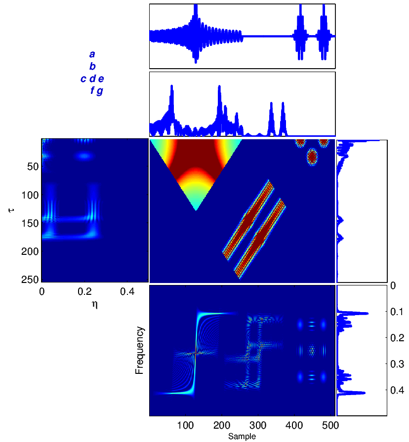
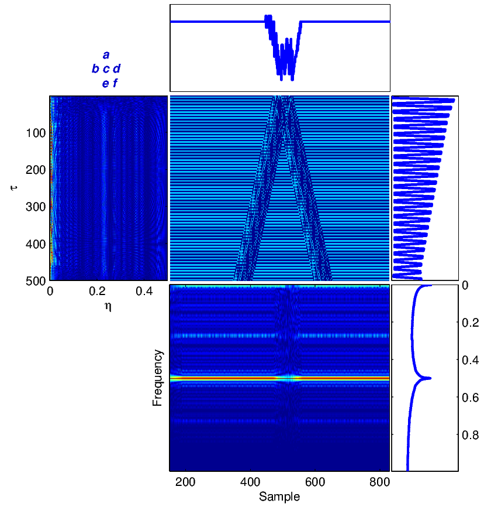
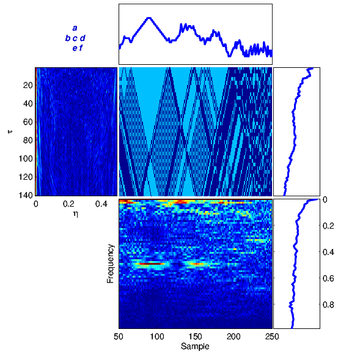
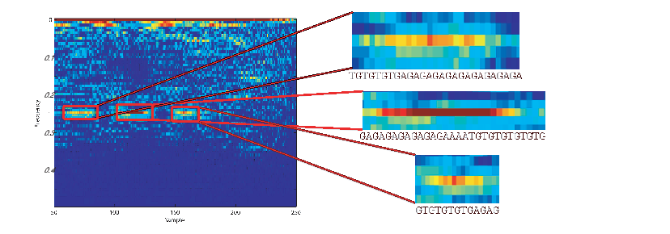
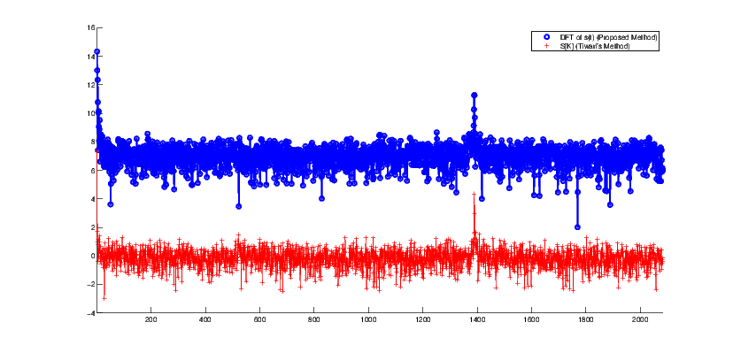

(⋅) represents the Fourier transform.
(⋅) represents the Fourier transform.
Interpretive Signal Processing Interpretive Signal Processing (ISP) is a new concept for exploiting signal processing algorithms and techniques for analyzing and extracting useful information from non-numeric data, i.e., sequences with non-numeric elements, which can be considered as discrete/digital non-numeric signals. Genomic data like DNA sequences or Protein sequences can be considered as digital non-numeric signals. DNA sequences contain from 4 nucleotides which represent by 4 alphabet letters: A, C, G, T. Similarly, protein sequences contain from 20 amino acids which illustrated by 20 alphabetic letters. The main idea behind ISP is how to interpret a signal processing algorithm for applying it on non-numeric data and gain useful information. Some of the instances of ISP are presented in the following papers: H. Hassani Saadi, R. Sameni, and A. Zollanvari, “Interpretive time-frequency analysis of genomic sequences,” BMC Bioinformatics, vol. 18, no. 4, p. 154, 2017. [Online]. Available: http://dx.doi.org/10.1186/s12859-017-1524-0 [ bib | DOI | http ] H. Hassani Saadi and R. Sameni, “Using matched filters for similarity search in genomic data,” in Proceedings of the 16th CSI International Symposium on Artificial Intelligence and Signal Processing (AISP), Shiraz, Iran, 2-3 May 2012 2012, pp. 469-472. [ bib ] Please click here to download the Matlab source codes for generating the results of these papers. |
Interpretive Time-Frequency Analysis of Genomic Sequences
Hamed Hassani Saadi1 , Reza Sameni1 and Amin Zollanvari2*
*Correspondence: amin.zollanvari@nu.edu.kz
1School of Electrical and Computer Engineering, Shiraz University, Shiraz, Iran. 2Department of Electrical and Electronic Engineering, Nazarbayev University, Astana, Kazakhstan.
Abstract
Background
Time-Frequency
(TF)
analysis
has
been
extensively
used
for
the
analysis
of
non-stationary
numeric
signals
in
the
past
decades.
At
the
same
time,
recent
studies
have
statistically
confirmed
the
non-stationarity
of
genomic
non-numeric
sequences
and
suggested
the
use
of
non-stationary
analysis
for
these
sequences.
The
conventional
approach
to
analyze
non-numeric
genomic
sequences
using
techniques
specific
to
numerical
data
is
to
somehow
convert
non-numerical
data
into
numerical
values
in
and
then
apply
time
or
transform
domain
signal
processing
algorithms.
Nevertheless,
this
approach
raises
questions
regarding
the
relative
magnitudes
under
numeric
transforms,
which
can
potentially
lead
to
spurious
patterns
or
misinterpretation
of
results.
Results
In
this
paper,
using
the
notion
of
interpretive
signal
processing
(ISP)
and
by
redefining
correlation
functions
for
non-numeric
sequences,
a
general
class
of
bilinear
TF
transforms
are
extended
and
applied
to
non-numerical
genomic
sequences.
The
technique
has
been
successfully
evaluated
on
synthetic
and
real
DNA
sequences.
Conclusion
The
proposed
framework
is
fairly
generic
and
is
believed
to
be
useful
for
extracting
quantitative
and
visual
information
regarding
local
and
global
periodicity,
symmetry,
(non-)
stationarity
and
spectral
color
of
genomic
sequences.
The
notion
of
interpretive
time-frequency
analysis
introduced
in
this
work
can
be
considered
as
the
first
step
towards
the
development
of
a
rigorous
mathematical
construct
for
genomic
signal
processing.
Keywords: Genomic Signal Processing; Time-Frequency Analysis; Interpretive Signal Processing
The application of signal processing techniques in genomics has found a great deal of attention and applications in the past decade [1, 2, 3, 4]. Nevertheless, an important class of analytical tools in signal processing that have not been yet fully formulated in genomics is the class of joint time-frequency (TF) distributions and transforms. These are powerful mathematical tools with various applications in signal processing [5, 6].
The major advantage of TF transforms and distributions over conventional Fourier analysis is to simultaneously retrieve the temporal (or spatial) and frequency domain structure of non-stationary data. In other words, while the temporal evolution of the frequency contents of a signal is lost in the conventional spectral estimation using the Fourier analysis, the TF gives a detailed view of such information for non-stationary signals. At the same time, several studies have statistically confirmed the non-stationarity of genomic sequences and suggested the use of non-stationary analysis for these sequences [7, 8, 9]. There could be many potential applications by applying the TF transforms to genomic sequences. Nevertheless, the first step in this line of work is to be able to apply these transforms to non-numerical genomic sequences.
The conventional approach to analyze genomic sequences using techniques specific to numerical data is to convert non-numerical genomic data into numerical values in some way and then apply time or transform domain signal processing algorithms to the resulting numeric series [10, 11]. Despite the promising results achieved by these methods, the procedure of converting genomic data into numerical data has been the bottleneck for these techniques—there is no concrete one-to-one map between non-numeric data and the numeric domain. Moreover, the process of converting non-numeric data to numeric values, can have misleading outcomes. For instance, the genomic alphabet (A, G, C and T) is not an ordered set. However, in mapping this alphabet to real values, the sequence is implicitly mapped to an ordered set, which raises expectations regarding their relative magnitudes under numeric transforms, resulting in misinterpretation of the processing results.
In [12], we introduced the notion of interpretive signal processing (ISP) as a novel approach for extending signal processing algorithms to non-numerical data. ISP can be seen as a subset of the general notion of sequential pattern mining, which has become a prominent topic in sequence data mining during recent years. In ISP, instead of coding non-numerical strings into numerical ones, the basic idea is to use the interpretations of conventional signal processing algorithms to reconstruct similar techniques that are directly applicable to non-numerical data. The notion of ISP is fairly general and may be used in various applications.
In this study, we employ ISP for applying a general class of TF transforms to analyze genomic sequences. As in real valued signals, the advantage of TF analysis over basic Fourier analysis is that it provides a means of analyzing both local and global patterns within a non-stationary sequence. Therefore, using TF transforms, local (yet significant) events which are commonly dominated by averaging in classical Fourier analysis can be identified within a sequence. As a proof-of-principle, we use the ISP-inspired TF analysis for detecting periodicities in coding regions and also detecting repetitive sub-sequences, also known as tandem repeats. The length and period of such sequences have important biological implications and several methods have been presented in the past for detecting these sub-sequences [13, 11, 14].
The rest of the paper is organized as follows. In section 2, the basics of a general class of time-frequency transforms are reviewed. In section 3, the general idea of ISP is illustrated with a simple example. The extension of time-frequency transforms for non-numeric genomic data is presented in section 4, followed by some concluding remarks and future perspective of the work.
We first review some general concepts of bilinear TF analysis that are later extended to non-numerical data.
Correlation is a primary concept of great value in most signal processing algorithms. The instantaneous cross-correlation of the signals x(t) and y(t) is defined
|
| (1) |
which for real-valued signals, according to the explanations in Section 3, is a simple measure of similarity of x(t - τ∕2) and y(t + τ∕2). In fact, in (1), the multiplication operator is used to measure the similarity of its operands. In Section 4, we will show how this product can be replaced by the values of the similarity matrix of the genomic “alphabets”.
By summing rxy(t,τ) (or integrating for continuous-time signals), the cross-correlation function is achieved.
|
| (2) |
This function is a measure of the average similarity of the two signals with τ-samples of time lag. Alternatively, by summing rxy(t,τ) over τ, a measure of signal symmetry is achieved.
|
| (3) |
Taking the Fourier transform of Rxy(τ) with respect to τ, results in the cross-spectrum.
|
| (4) |
where (⋅) represents the Fourier transform.
The cross-Wigner-Ville is the Fourier transforms of rxy(t,τ) with respect to τ.
|
| (5) |
The Wigner-Ville (WV) transform can be interpreted as the time-variant extension of (4), which is specifically useful for the spectral study of non-stationary signals.
The last TF transform that we introduce is the ambiguity function (AF), defined as follows
|
| (6) |
The ambiguity function is basically a time-frequency correlation with a maximum at the origin [5]. It has been shown that the ambiguity function can be used to discriminate signals with different spectral color and temporal correlation [5]. The relationship between the instantaneous correlation and the other bilinear transforms is summarized in Figure 1.
Due to the bilinear form of the WV transform (containing the product of x(⋅) and y(⋅)), undesired cross-terms appear in the time-frequency plane. The cross-terms can be attenuated by filtering the WV transform using a TF kernel ϕ(⋅,⋅), which results in the following general form
|
| (7) |
where ** is the two-dimensional convolution operator. Equation (5) is the most general form of a general class of TF transforms (or TF distributions) known as the Cohen class [15]. The properties of these distributions are controlled by ϕ(t,f). According to Figure 1, ϕ(t,f) may also be applied to the TF transform in the Ambiguity plane, where it takes a multiplicative form rather than two-dimensional convolution.
Equations (1)-(7) can be calculated for a single signal by setting y(t) = x(t), which gives the similarity of a signal with its time-lagged variants in the time and frequency domain.
To illustrate the application of the introduced TF transforms, we consider a sample segment of the signal x(t) = y(t) consisting of a chirp and two Gaussian signals [16], shown in Figure 2. The results of (1)-(6) calculated for this signal are shown in Figure 2. To understand the significance of TF analysis, compare the spectrum of the signal in Figure 2 (g) with the WV distribution of this signal in Figure 2 (f). As we can see, the evolution in time of the frequency content of the signal is totally lost in Figure 2 (g). However, one can trace variations in the spectral content as a function of time (sample) in Figure 2 (f). For example, the chirp is represented by a relatively wide-band signal, whose (normalized) frequency content is decreasing from 0.4 to 0.1 around time points 20 to 200.

All practical signal processing algorithms have some intuitive interpretation besides their mathematical formulation. Let us illustrate the idea with a simple example: it is well known that the inner product of discrete-time real signals x(t) and y(t) is mathematically defined as follows
|
| (8) |
In (8), whenever x(t) and y(t) have the same sign (both positive or negative), a positive value is added to the summation; while when they differ in sign a negative value is added. Therefore, for zero-mean signals (which have both positive and negative values), if the inner product is close to zero, one can conclude that the two signals do not have a similar pattern, while a great absolute value of the inner product is an indication of average “co-variance” or similarity of the two signals. In fact, the multiplication operator in (8), provides a measure of point-wise similarity, while the summation gives the average behavior of this similarity. This basic interpretation has led to the definition of a hand full of other measures of signal co-variance. For instance, one may subtract the mean values of x(t) and y(t) to centralize the data (when the mean values do not convey information), or to normalize it by the square roots of the energies of x(t) and y(t), in order to make the inner product dimensionless and to normalize it between -1 and +1. For certain applications, researchers have replaced the point-wise product of x(t)y(t) by other measures of similarity, like sign(x(t)y(t)) (cf. [17]). We can see that while the “inner product as a measure of signal similarity” is a common property of various forms of these definitions, employing the appropriate form hinges on the application.
Herein, we refer to the procedure of reforming signal processing algorithms based on their interpretation, as interpretive signal processing (ISP). In [12], we used the notion of ISP to apply matched filters in genomic signal processing. We show how this procedure helps us reformulate the Cohen class of time-frequency transforms for genomic sequence data.
As shown in Figure 1, the core of all bilinear transforms is the instantaneous cross- or auto-correlation. In order to extend TF transforms to non-numeric genomic sequence data, we propose to replace the product of x(⋅) and y(⋅) in rxy(t,τ) with the similarity matrix entries of genomic sequences. This idea is based on the interpretation of the product as a measure of similarity. Since a DNA sequence consists of four nucleotides, Adenine, Cytosine, Guanine, and Thymine, denoted by A, C, G, and T, respectively, a possible choice of the similarity matrix is the identity matrix represented as
|
| (9) |
which indicates that each of the DNA nucleotides only resembles itself. In practice, based on experimental statistics, a bioinformatician may choose non-zero values for the off-diagonal entries or values smaller than one for the diagonal entries, indicating the probability of base-pair mutation at a specific locus. Moreover, in order to analyze a specific nucleotide and neglect others, all irrelevant entries of the matrix can be set to zero, which results in selective frequency or selective pattern analysis for DNA sequences. For proteins sequences, one may use BLOSUM62 and PAM250 matrices [18].
Since all bilinear transforms contain the product of two terms, the proposed approach is an indirect means of mapping non-numeric sequences to numeric values, which is guaranteed to serve as a similarity measure (by definition), and does not suffer from the ordering issue in previous mapping techniques (as noted in the introduction).
Before applying the method to real DNA and protein sequences, let us consider a synthetic sequence for illustration.
For illustration, consider the following synthetic periodic DNA sequence, with period 4 (ACGT) and length 1000.
|
| (10) |
Real DNA sequences are never fully periodic. In order to make the sequence more realistic, we add some random changes (noise) to the sequence, by random substitutions of some nucleotides.
![x[n] = ⋅⋅⋅AGGTTCGTACGAACCT⋅⋅⋅](ISP12x.png) | (11) |
Using the trivial similarity matrix in (9), equations (2)-(6) can be calculated for this nucleotide sequence using (1). The results are summarized in Figure 3.

Part (e) in Figure 3 shows the WV plane for the noisy synthetic sequence in (11). We can clearly see that the pseudo-periodicity of the sequence has led into a horizontal line at 0.25 (normalized frequency) in this figure, which is equivalent to a periodicity of 1/0.25 = 4 samples. Also, this pseudo-periodicity causes a peak in part (f), which shows the global spectral properties of the signal. It has been shown that for stationary and temporally correlated signals (i.e., a colored spectrum), most of the ambiguity function’s energy is spread in the τ direction around η = 0 [5]. This explains the ambiguity function form of our synthetic periodic sequence, which is stationary over time. More examples will be shown for real sequences in the next section. The effect of the correlation lag τ is seen in Figure 3 (c), where we can see that due to the periodicity of our synthetic sequence, correlations exist between near (small τ) and far samples (large τ).
The proposed framework has been tested on several DNA sequences. As a first case study, we apply the method to a real DNA sequence adopted from the National Center for Biotechnology Information (NCBI)[1] database. Figure 4 illustrates equations (1)-(6) for the DNA sequence with the accession number FJ807392.1 (Figure 4(a)) adopted from [19], and a random generated DNA sequence (Figure 4(b)).
For comparison, the results in Figure 4(a) can be compared with similar results obtained from a totally random synthetic DNA sequence of the same length in Figure 4(b). It is seen that there is no specific structure in the time-frequency transforms of the random sequence, while there are clear structures indicating local periodicities, nonstationarities and spectral color in the real DNA sequence.
| 
(a) |

(b) |
According to NCBI, FJ807392.1 is a Helice tientsinensis microsatellite TJH03 sequence, which is a repetitive sequence with 282 base nucleotide pairs. Figure 5 is a zoom-in of the WV plane for this sequence, from which its repetitive sub-sequences can be well seen and detected at 0.25 and 0.02 normalized frequencies, corresponding to both short term and long term periodicities in the sequence.
Moreover, due to the repetitive structure of this sequence, it can be considered a stationary and colored sequence, which explains the ambiguity plane structure in Figure 4(a) part (b), which is concentrated around η = 0 and spread in the direction of τ. Therefore, the proposed ambiguity plane can be used to study the spectral and stationarity properties of DNA sequences. This is especially useful for feature extraction and classification of DNA and protein sequences.

As a second case study, the proposed method is compared with a well known method called indicator sequences, for analyzing DNA sequences [20, 1]. Accordingly, indicator sequences of a DNA sequence are four binary sequences corresponding to the four different nucleotides. Each sample in the indicator sequence specifies the presence of the nucleotide at that position. The following is an example of a DNA sequence and its indicator sequences:
![DNA sequence: A G C C T G A
Indicator sequence uA[n]: 1 0 0 0 0 0 1
Indicator sequence uC[n]: 0 0 1 1 0 0 0
Indicator sequence uG[n]: 0 1 0 0 0 1 0
Indicator sequence u [n]: 0 0 0 0 1 0 0
T](ISP17x.png) | (12) |
According to [20], the indicator sequence can be used to define the DNA spectrum, as follows:
|
| (13) |
where Ui[k] is the discrete Fourier transform (DFT) of ui[n] (i = {A,C,G,T}). In [20], it has been empirically shown that for a coding region within a DNA sequence (a region that can be converted to a protein), equation (13) has a clear peak at k = N∕3 where N is the DNA sequence length. While this observation has been referred to in various studies, to the authors’ knowledge, no mathematical explanation has yet been presented for it. However, using our proposed machinery, one observes a similar periodicity by using the identity similarity matrix (9) and by calculating the spectral function (4). The results of this comparison are shown in Figure 6.
To illustrate this, we take a DNA sequence with the NCBI accession number NM_001244612.1. This DNA sequence with 4165 base pairs is known to be a coding region for human proteins. Figure 6 shows the DNA spectrum calculated from indicator sequences. The second signal in Figure 6 is the Fourier transform of the proposed symmetry function (3). The peak for the Fourier transform of (3) reports a periodicity at N∕3.

In this study, using the notion of interpretive signal processing (ISP), the conventional time-frequency transforms have been extended to analyze non-numerical genomic sequences. Applications of the proposed machinery in determining genome periodicity and detecting tandem repeats were presented using synthetic and real DNA sequences. The results show that the proposed ISP-inspired TF transforms (to which we refer as the interpretive TF analysis) can be useful to analyze genomic sequences.
In our experiments, we show that by defining the instantaneous auto-correlation of DNA sequences using similarity matrices, local and global periodicities in the sequences can be detected by the WV transform in (5). Symmetric sub-sequences can be determined by the symmetry function (3) and the stationarity and spectral properties of sequences can be recognized by the ambiguity function (6). Also, the global spectrum of the sequences can be calculated by the spectrum of the sequences (4) and the global correlation of the sequences can be found by the auto-correlation function (2).
The major advantage of ISP per se is to process the non-numerical symbols directly (instead of converting the symbols into numerical values). This property simplifies the interpretation of the output of signal processing algorithms when applied to non-numerical symbols. However, ISP is not always trivial, since the interpretation of mathematical equations is not always straightforward. Moreover, the interpretation of signal processing algorithms is not necessarily unique and in some cases unfeasible. Therefore, in practice ISP can result in algorithms that are only partially applicable to non-numerical data while the remaining parts are left unchanged—as in the TF transforms presented in this work, in which only the instantaneous auto-correlation function was replaced with the similarity matrix of genomic sequences.
Other aspects of the proposed interpretive TF analysis that require further work are: 1) investigating other biologically-inspired applications of the proposed machinery; 2) studying different choices of similarity matrices in various applications such as DNA or protein sequence alignment; 3) integrating the proposed machinery in existing sequence analysis toolboxes for extracting further quantitative and visual information from genomic sequences; 4) using the TF representations as features (as an image) and using image classification and clustering techniques for classifying unknown genomic sequences; and 5) extending the hereby proposed notion to higher order spectra (HOS) and higher order time-frequency analysis.
These contributions can be considered as a step towards the development of a rigorous mathematical construct for genomic sequence signal processing.
The authors declare that they have no competing interests.
References
1. Anastassiou D. Genomic signal processing. Signal Processing Magazine, IEEE. 2001 July;18(4):8–20.
2. Kakumani R, Ahmad MO, Devabhaktuni V. Comparative genomic analysis using statistically optimal null filters. In: ISCAS. IEEE; 2010. p. 2235–2238.
3. Afreixo V, Ferreira PJSG, Santos D. Fourier analysis of symbolic data: A brief review. Digital Signal Processing. 2004 Nov;14(6):523–530.
4. Vaidyanathan PP, jun Yoon B. The role of signal-processing concepts in genomics and proteomics. Journal of the Franklin Institute. 2004;341:111–135.
5. Flandrin P. Time-frequency/time-scale analysis. Academic Press; 1999.
6. Qian S, Chen D. Joint Time-Frequency Analysis: Method and Application. Prentice Hall; 1996.
7. Bouaynaya N, Schonfeld D. Nonstationary Analysis of Coding and Noncoding Regions in Nucleotide Sequences. IEEE Journal of Selected Topics in Signal Processing. 2008;2(3):357 – 364.
8. Bouaynaya N, Schonfeld D. Emergence of New Structure From Non-stationary Analysis of Genomic Sequences. In: IEEE International Workshop on Genomic Signal Processing and Statistics; 2008. p. 1–4.
9. Zielinski J, Schonfeld NBD, O‘Neill W. Time-dependent ARMA modeling of genomic sequences. BMC Bioinformatics. 2008;9(Suppl 9):S14.
10. Anastassiou D. Frequency-domain analysis of biomolecular sequences. Bioinformatics. 2000;16(12):1073–1081.
11. Sussillo D, Kundaje A, Anastassiou D. Spectrogram analysis of genomes. EURASIP J Appl Signal Process. 2004 Jan;2004:29–42.
12. Hassani Saadi H, Sameni R. Using matched filters for similarity search in genomic data. In: Proceedings of the 16th CSI International Symposium on Artificial Intelligence and Signal Processing (AISP). Shiraz, Iran; 2012. p. 469–472.
13. Buchner M, Janjarasjitt S. Detection and visualization of tandem repeats in DNA sequences. Signal Processing, IEEE Transactions on. 2003 sept;51(9):2280–2287.
14. Pop PG, Lupu E. DNA repeats detection using BW spectrograms. In: Automation, Quality and Testing, Robotics, 2008. AQTR 2008. IEEE International Conference on. vol. 3; 2008. p. 408 –412.
15. Cohen L. Time-frequency analysis. Prentice Hall PTR, Englewood Cliffs, N.J; 1995.
16. Auger F, Flandrin P, Goncalves P, Lemoine O. Time-Frequency Toolbox; 1996. Available from: http://tftb.nongnu.org/.
17. Theis F, Mller N, Plant C, Bhm C. Robust Second-Order Source Separation Identifies Experimental Responses in Biomedical Imaging. In: Vigneron V, Zarzoso V, Moreau E, Gribonval R, Vincent E, editors. Latent Variable Analysis and Signal Separation. vol. 6365 of Lecture Notes in Computer Science. Springer Berlin / Heidelberg; 2010. p. 466–473.
18. Pevsner J. Bioinformatics and functional genomics. Wiley-Blackwell; 2009.
19. Zhang D, Ding G, Zhang H, Tang B. Isolation and characterization of 10 microsatellite markers in Helice tientsinensis (Brachyura: Varunidae). Conserv Genet Resour. 2009;1(1):321–323. GenBank: FJ807392.1.
20. Tiwari S, Ramachandran S, Bhattacharya A, Bhattacharya S, Ramaswamy R. Prediction of probable genes by Fourier analysis of genomic sequences. Computer applications in the biosciences: CABIOS. 1997;13(3):263–270.